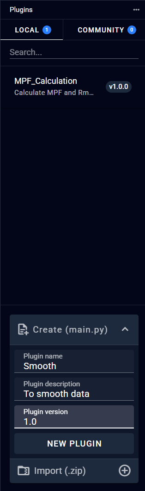

9.2 Plugin
9.2.1 Add Plugin
To add a new plugin in the Plugin section, a Python file is required: A Python file that follows a specific format containing the executable code for data processing. Users can input these files in two ways: Drag and drop the files directly from their local system to the input area Click the input field to open a file selection dialog Once both files are selected, click "Import" to complete the upload process. Note that both files must conform to specific format requirements. If the format requirements are not met, error messages will be displayed, indicating that modifications to the plugin content are necessary.
After successful import, the newly imported plugin will appear in the plugin list below. To utilize this newly added plugin in the pipeline interface, right-click and select "Reload Workflow". Important: Please ensure you save any existing modifications before reloading, as this action will reset unsaved changes.
9.2.2 Create Plugin
Create a new python file in the software and fill in the content according to the requirements in the template.  Below is the Template interface for writing python file. After successful import, the newly imported plugin will appear in the plugin list below. To utilize this newly added plugin in the pipeline interface, right-click and select "Reload Workflow". Important: Please ensure you save any existing modifications before reloading, as this action will reset unsaved changes.
9.2.3 Delete Plugin

9.2.4 Open Plugin File
Open the folder where the plugin file is located on the user's local computer.

9.2.5 Reload Plugin File
9.2.5 Plugin Environment Settings
Users can freely choose the Python kernel they want to use and download and install dependent libraries.